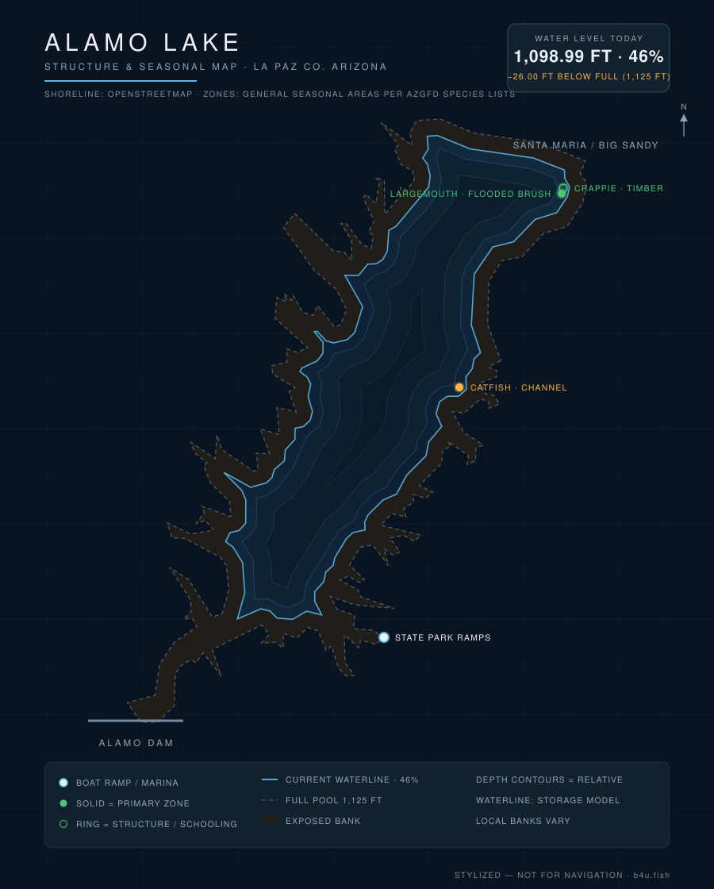

Alamo Lake is a remote, legendary largemouth bass and crappie fishery on the Bill Williams River in western Arizona — worth the drive when the bite turns on. Here's what to know before you launch — plus live conditions updated every day.

Waterline reflects the latest level reading (stylized — not for navigation). Fish zones are general seasonal areas, not exact spots, compiled from AZGFD species lists & lake guides and published Arizona fishing reports. Water data: SRP/DWR, CAP, USACE.
Current water level (elevation and storage from the US Army Corps of Engineers), weather, solunar bite windows, and a daily fishing score for Alamo are tracked on the b4u.fish dashboard.
Alamo sits behind Alamo Dam, a US Army Corps of Engineers flood-control structure completed in 1968 on the Bill Williams River, about 39 miles upstream of Lake Havasu. Because it's managed for flood control, the lake rises and falls with desert runoff — big wet winters can flood standing brush and trigger legendary bass years, while dry stretches draw it down. Its isolation (135 miles from Phoenix, surrounded by state-park desert) keeps pressure low and the night skies dark.
Prime time. Bass move shallow to spawn around brush and coves and crappie stack on structure — often the year's best fishing.
Beat the heat at dawn and dusk; go deeper midday. The remote, dark-sky location makes early and late trips especially productive. The daily score on b4u.fish flags the workable windows.
Cooling water keeps bass and crappie catchable around structure; a rising lake after winter storms can turn the bite on fast.
Because Alamo is a long haul, timing matters. The b4u.fish dashboard combines moon phase, solunar major/minor windows, wind, cloud cover, water temperature, and barometric stability into a single daily score — so you can pick your weekend before you commit to the drive.
From Phoenix, take US-60 west to Wenden, then head north on Alamo Dam Road about 45 minutes to Alamo Lake State Park — roughly 135 miles (about 2.5 hours) total. The park is open year-round with campgrounds and cabins, so many anglers make it an overnight trip. Fill up and stock up in Wenden; services at the lake are limited.
Target (full) pool is about 1,125 ft; recreation pool is 1,070 ft. Live elevation and storage from the US Army Corps of Engineers are on the b4u.fish dashboard.
Largemouth bass, crappie, redear sunfish, bluegill, channel catfish, and tilapia.
Two paved ramps at the main and Cholla campgrounds, plus a level-dependent High Water ramp — availability depends on the lake level.
US-60 west to Wenden, then Alamo Dam Road ~45 minutes north — about 135 miles / 2.5 hours total.